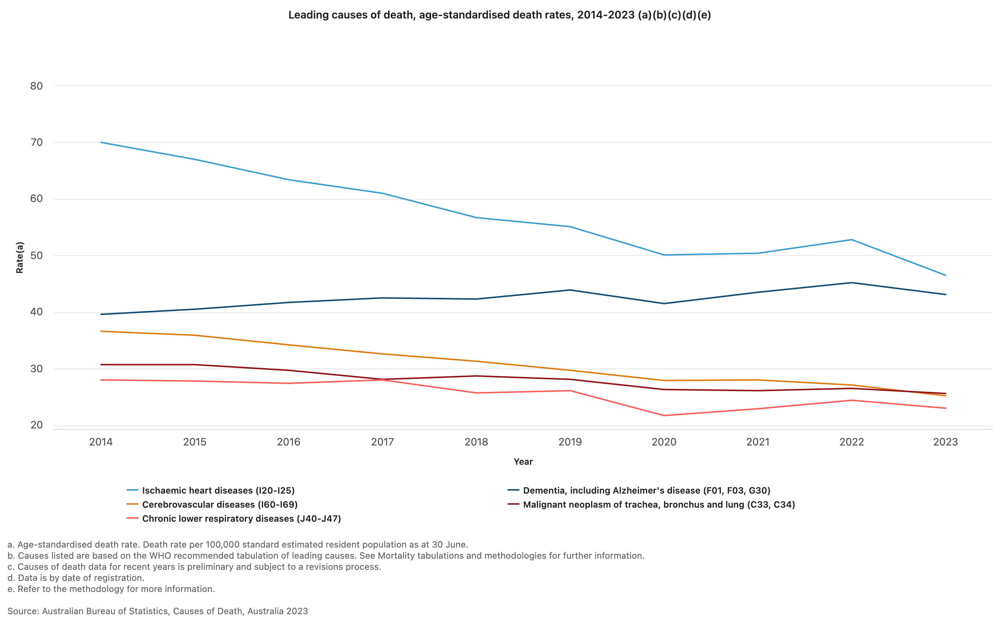
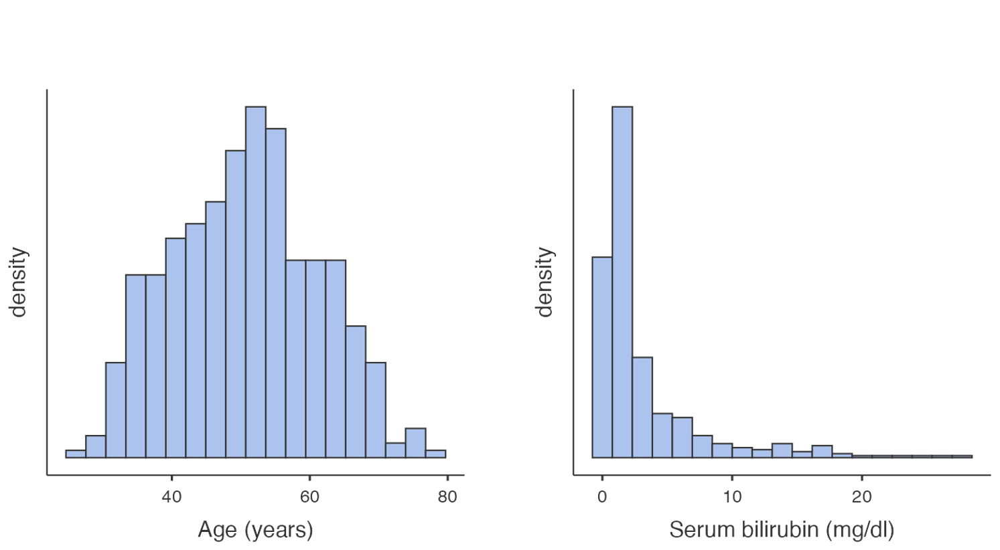
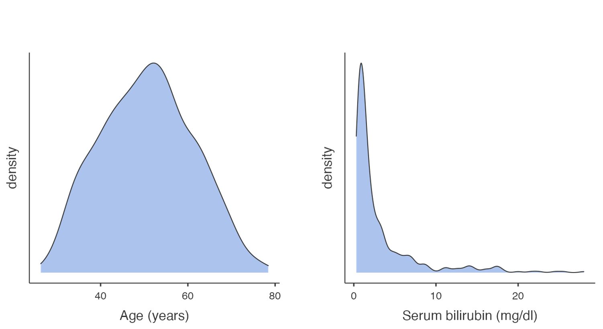
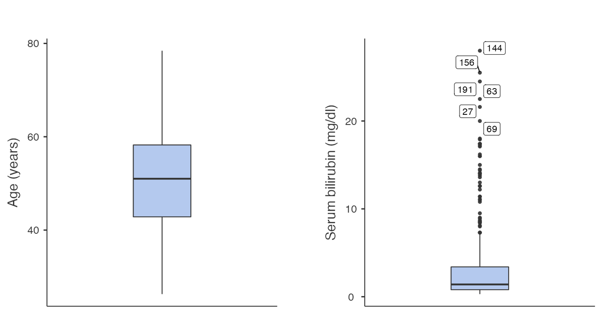

Learning objectives
By the end of this module, you will be able to:
- Understand the difference between descriptive and inferential statistics
- Distinguish between different types of variables
- Present and report data numerically
- Present and interpret graphical summaries of data using a variety of graphs
- Compute summary statistics to describe the centre and spread of data
Optional readings
Kirkwood and Sterne (2001); Chapters 2 and 3. [UNSW Library Link]
Bland (2015); Chapter 4. [UNSW Library Link]
Acock (2010); Chapter 5.
Graphics and statistics for cardiology: designing effective tables for presentation and publication, Boers (2018, UNSW Library Link)
Guidelines for Reporting of Figures and Tables for Clinical Research in Urology, Vickers et al. (2020, UNSW Library Link)
1.1 An introduction to statistics
The dictionary of statistics (Upton and Cook, 2008) defines statistics simply as: “The science of collecting, displaying, and analysing data.”
Statistics is a branch of mathematics, and there are two main divisions within the field of statistics: mathematical statistics and applied statistics. Mathematical statistics deals with development of new methods of statistical inference and requires detailed knowledge of abstract mathematics for its implementation. Applied statistics applies the methods of mathematical statistics to specific subject areas, such as business, psychology, medicine and sociology.
Biostatistics can be considered as the “application of statistical techniques to the medical and health fields”. However, biostatistics sometimes overlaps with mathematical statistics. For instance, given a certain biostatistical problem, if the standard methods do not apply then existing methods must be modified to develop a new method.
1.1.1 Scope of Biostatistics
Research is essential in the practice of health care. Biostatistical knowledge helps health professionals in deciding whether to prescribe a new drug for the treatment of a disease or to advise a patient to give up drinking alcohol. To practice evidence-based healthcare, health professionals must keep abreast of the latest research, which requires understanding how the studies were designed, how data were collected and analysed, and how the results were interpreted. In clinical medicine, biostatistical methods are used to determine the accuracy of a measurement, the efficacy of a drug in treating a disease, in comparing different measurement techniques, assessing diagnostic tests, determining normal values, estimating prognosis and monitoring patients. Public health professionals are concerned about the administration of medical services or ensuring that an intervention program reduces exposure to certain risk factors for disease such as life-style factors (e.g. smoking, obesity) or environmental contaminants. Knowledge of biostatistics helps determine them make decisions by understanding, from research findings, whether the prevalence of a disease is increasing or whether there is a causal association between an environmental factor and a disease.
The value of biostatistics is to transform (sometimes vast amounts of) data into meaningful information, that can be used to solve problems, and then be translated into practice (i.e. to inform public health policy and decision making). When undertaking research having a biostatistician as part of a multidisciplinary team from the outset, together with scientists, clinicians, epidemiologists, healthcare specialists is vital, to ensure the validity of the research being undertaken and that information is interpreted appropriately.
1.2 What are data?
According to the Australian Bureau of Statistics, “data are measurements or observations that are collected as a source of information”.1 Note that technically, the word data is a plural noun. This may sound a little odd, but it means that we say “data are …” when discussing a set of measurements.
Other definitions that we use in this course are:
- observation, (or record, or unit record): one individual in the population being studied
- variable: a characteristic of an individual being measured. For example, height, weight, eye colour, income, country of birth are all types of variables.
- dataset: the complete collection of all observations
1.2.1 Types of variables
We can categorise variables into two main types: numeric or categorical.
Numerical variables (also called quantitative variables) comprise data that must be represented by a number, which can be either measured or counted.
Continuous variables can take any value within a defined range.
For example, age, height, weight or blood pressure, are continuous variables because we can make any divisions we want on them, and they can be measured as small as the instrument allows. As an illustration, if two people have the same blood pressure measured to the nearest millimetre of mercury, we may get a difference between them if the blood pressure is measured to the nearest tenth of millimetre. If they are still the same (to the nearest tenth of a millimetre), we can measure them with even finer gradations until we can see a difference.
Discrete variables can only take one of a distinct set of values (usually whole numbers). For discrete variables, observations are based on a quantity where both ordering and magnitude are important, such that numbers represent actual measurable quantities rather than mere labels.
For example, the number of cancer cases in a specified area emerging over a certain period, the number of motorbike accidents in Sydney, the number of times a woman has given birth, the number of beds in a hospital are all discrete variables. Notice that a natural ordering exists among the data points, that is, a hospital with 100 beds has more beds than a hospital with 75 beds. Moreover, a difference between 40 and 50 beds is the same as the difference between 80 and 90 beds.
Categorical variables comprise data that describe a ‘quality’ or ‘characteristic’. Categorical variables, sometimes called qualitative variables, do not have measurable numeric values. Categorical variables can be nominal or ordinal.
A nominal variable consists of unordered categories. For example, gender, race, ethnic group, religion, eye colour etc. Both the order and magnitude of a nominal variable are unimportant.
If a nominal variable takes on one of two distinct categories, such as black or white then it is called a binary or dichotomous variable. Other examples would be smoker or non-smoker; exposed to arsenic or not exposed.
A nominal variable can also have more than two categories, such as blood group, with categories of: Group A, Group B, Group AB and Group O.
Ordinal variables consist of ordered categories where differences between categories are important, such as socioeconomic status (low, medium, high) or student evaluation rating could be classified according to their level of satisfaction: (highly satisfied, satisfied and unsatisfied). Here a natural order exists among the categories.
Note that categorical variables are often stored in data sets using numbers to represent categories. However, this is for convenience only, and these variable must not be analysed as if they were numeric variables.
1.3 Descriptive and inferential statistics
When analysing a set of data, it is important to consider the aims of the analysis and whether these are descriptive or inferential. Essentially, descriptive statistics summarise data from a single sample or population, and present a “snap-shot” of those data. Inferential statistics use sample data to make statements about larger populations.
1.3.1 Descriptive statistics
Descriptive statistics provide a ‘picture’ of the characteristics of a population, such as the average age, or the proportion of people born in Australia. Two common examples of descriptive statistics are reports summarising a nation’s birth statistics, and death statistics.
1.3.1.1 Births
The Australian Institute of Health and Welfare produces comprehensive reports on the characteristics of Australia’s mothers and babies using the most recent year of data from the National Perinatal Data Collection. The National Perinatal Data Collection comprises all registered births in Australia.
The most recent report, published in 2024, summarises Australian births from 2022. ((australianinstituteofhealthandwelfare24?)).
One headline from the report is that “More First Nations mothers are accessing antenatal care in the first trimester (up from 51% in 2013 to 71% in 2022)”. The report presents further descriptive statistics, such as the average maternal age (31.2 years) and the proportion of women giving birth by caesarean (39%).
1.3.1.2 Deaths
In another example, consider characteristics of all deaths in Australia in 2023 ((australianbureauofstatistics24?)).
“COVID-19 was the ninth leading cause of death in 2023, after ranking third in 2022.”
The report presents the leading causes of death in 2023:
“The leading cause of death was ischaemic heart disease, accounting for 9.2% of deaths. The gap between ischaemic heart disease and dementia (the second leading cause of death) has continued to narrow over time, with only 237 deaths separating the top two leading causes in 2023.”
The top five causes of death are also presented as a graph, enabling a simple comparison of the changes in rates of death between 2014 and 2023.
1.3.2 Inferential statistics
Inferential statistics use data collected from a sample to make conclusions (inferences) about the whole population from which the sample was drawn. For example, the Australian Institute of Health and Welfare’s Australia’s health reports (eg (australianinstituteofhealthandwelfare25?)) use a representative sample to make estimates of the health of the whole of Australia. We will revisit inferential statistics in later modules.
1.4 Summarising continuous data
In the first two Modules, we will focus on ways to summarise and present data. We will see that the choice of presentation will depend on the type of variable being summarised. In this Module, we will focus on continuous variables, and will focus on categorical data in Module 2.
1.4.1 Summarising a single continuous variable numerically
When summarising continuous data numerically, there are two things we want to know:
- What is the average value? And,
- How variable (or spread out) are the data?
We will use a sample of 35 ages (in whole years) to illustrate how to calculate the average value and measures of variability:
59 41 44 43 31 47 53 59 35 60 54 61 67 52 43 46 39 69 50 64 57 39 54 50 51 31 48 49 70 44 60 51 37 53 34
1.4.1.1 Measures of central tendency
1.4.1.2 Mean
The most commonly used measure of the central tendency of the data is the mean, calculated as:
\[\bar{x} = \frac{\sum x}{n}\]
From the age example: \(\bar{x}\) = 1745/35 = 49.9. Thus, the mean age of this sample is 49.9 years.
1.4.1.3 Median
Other measures of central tendency include the median and mode. The median is the middle value of the data, the value at which half of the measurements lie above it and half of the measurements lie below it.
To estimate the median, the data are ordered from the lowest to highest values, and the middle value is used. If the middle value is between two data points (if there are an even number of observations), the median is an average of the two values.
Using our example, we could rank the ages from smallest to largest, and locate the middle value (which has been bolded):
31 31 34 35 37 39 39 41 43 43 44 44 46 47 48 49 50 50 51 51 52 53 53 54 54 57 59 59 60 60 61 64 67 69 70
Here, the median age is 50 years.
Note that, in practice, the median is usually calculated by software automatically, and there is no need to rank our data.
1.4.1.4 Describing the spread of the data
In addition to measuring the centre of the data, we also need an estimate of the variability, or spread, of the data points.
1.4.1.5 Range
The absolute measure of the spread of the data is the range, that is the difference between the highest and lowest values in the dataset.
Range = highest data value – lowest data value
Using the age example, Range = 70 - 31 = 39 years.
The range is most usefully reported as the actual lowest and highest values e.g. Range: 31 to 70 years.
The range is not always ideal as it only describes the extreme values, without considering how the bulk of the data is distributed between them.
1.4.1.6 Variance and standard deviation
More useful statistics to describe the spread of the data around a mean value are the variance and standard deviation. These measures of variability depend on the difference between individual observations and the mean value (deviations). If all values are equal to the mean there would be no variability at all, all deviations would be zero; conversely large deviations indicate greater variability.
One way of combining deviations in a single measure is to first square the deviations and then average the squares. Squaring is done because we are equally interested in negative deviations and positive deviations; if we averaged without squaring, negative and positive deviations would ‘cancel out’. This measure is called the variance of the set of observations. It is ‘the average squared deviation from the mean’. Because the variance is in ‘square’ units and not in the units of the measurement, a second measure is derived by taking the square root of the variance. This is the standard deviation (SD), and is the most commonly used measure of variability in practice, as it is a more intuitive interpretation since it is in the same units as the units of measurement.
The formula for the variance of a sample (\(s^2\)) is:
\[ s^2 = \frac{\sum(x - \bar{x})^2}{n-1} \]
Note that the deviations are first squared before they are summed to remove the negative values; once summed they are divided by the sample size minus 1.
The sample standard deviation is the square root of the of the sample variance:
\[s = \sqrt{s^2}\] For the age example, we would calculate the sample variance using statistical software. The sample standard deviation is estimated as: \(s = 10.47 \text{ years}\).
Characteristics of the standard deviation:
- It is affected by every measurement
- It is in the same units as the measurements
- It can be converted to measures of precision (standard error and 95% confidence intervals) (Module 3)
1.4.1.7 Interquartile range
The inter-quartile range (IQR) describes the range of measurements in the central 50% of values lie. This is estimated by calculating the values that cut the data at the bottom 25% and top 25%. The IQR is the preferred measure of spread when the median has been used to describe central tendency.
In the age example, the IQR is estimated as 43 to 59 years. Note that R and Stata use slightly different methods to calculate the interquartile range (Stata IQR: 43 to 59 years; R IQR: 43 to 58 years). This difference is not practically important, and either range would be considered correct.
1.4.1.8 Population values: mean, variance and standard deviation
The examples above show how the sample mean, range, variance and standard deviation are calculated from the sample of ages from 35 people. If we had information on the age of the entire population that the sample was drawn from, we could calculate all the summary statistics described above (for the sample) for the population.
The equation for calculating the population mean is the same as that of sample mean, though now we denote the population mean as \(\mu\):
\[ \mu = \frac{\sum{x}}{N} \]
Where \(\sum{x}\) represents the sum of the values in the population, and \(N\) represents the total number of measurements in the population.
To calculate the population variance (\(\sigma^2\)) and standard deviation(\(\sigma\)), we use a slightly modified version of the equation for \(s^2\):
\[ \sigma^2 = \frac{\sum(x - \mu)^2}{N} \]
with a population standard deviation of: \(\sigma = \sqrt{\sigma^2}\).
In practice, we rarely have the information for the entire population to be able to calculate the population mean and standard deviation. Theoretically, however, these statistics are important for two main purposes:
- the characteristics of the normal distribution (the most important probability distribution discussed in later modules) are defined by the population mean and standard deviation;
- while calculating sample sizes (discussed in later modules) we need information about the population standard deviation, which is usually obtained from the existing literature.
1.4.2 Summarising a single continuous variable graphically
As well as calculating measures of central tendency and spread to describe the characteristics of the data, a graphical plot can be helpful to better understand the characteristics and distribution of the measurements obtained. Histograms, density plots and box plots are excellent ways to display continuous data graphically.
1.4.2.1 Frequency histograms
A frequency histogram is a plot of the number of observations that fall within defined ranges of non-overlapping intervals (called bins). Examples of frequency histograms are given in Figure 1.2.

Some features of a frequency histogram:
- The area under each rectangle is proportional to the frequency
- The rectangles are drawn without gaps between them (that is, the rectangles touch)
- The data are ‘binned’ into discrete intervals (usually of equal width)
A slight variation on the frequency histogram is the density histogram, which plots the density on the y-axis. The density is a technical term, which is similar to the relative frequency, but is scaled so that the sum of the area of the bars is equal to 1.
Both the frequency and density histograms are useful for understanding how the data is distributed across the range of values. Taller bars indicate regions where the data is more densely concentrated, while shorter bars represent areas with fewer data points.
1.4.2.2 Density plot
A density plot can be thought of as a smoothed version of a density histogram. Like histograms, density plots show areas where there are a lot of observations and areas where there are relatively few observations. Figure 1.3 illustrates example density plots for the same data as plotted in Figure 1.2.

Like histograms, density plots allow you to see the overall shape of a distribution. They are most useful when there are only a small number of observations being plotted. When plotting small datasets, the shape of a histogram can depend on how the bins are defined. This is less of an issue if a density plot is used.
1.4.2.3 Boxplots
Another way to inspect the distribution of data is by using a box plot. In a box plot:
- the line across the box shows the median value
- the limits of the box show the 25-75% range (i.e. the inter-quartile range (IQR) where the middle 50% of the data lie)
- the bars (or whiskers) indicate the most extreme values (highest and lowest) that fall within 1.5 times the interquartile range from each end of the box
- the upper whisker is the highest value falling within 75th percentile plus 1.5 × IQR
- the lower whisker is the lowest value falling within 25th percentile minus 1.5 × IQR
- any values in the dataset lying outside the whiskers are plotted individually.
Figure 1.4 presents two example boxplots for age and serum bilirubin.

1.4.3 The shape of a distribution
Histograms and density plots allow us to consider the shape of a distribution, and in particular, whether a distribution is symmetric or skewed.
In a histogram, if the rectangles fall in a roughly symmetric shape around a single midpoint, we say that the distribution is symmetric. Similarly, if a density plot looks roughly symmetric around a single point, the distribution is symmetric.
If the histogram or density plot has a longer tail to the right, then the data are said to be positively skewed (or skewed to the right); if the histogram or density plot has an extended tail to the left, then the data are negatively skewed (or skewed to the left).
The skewness of a distribution is defined by the location of the longer tail in a histogram or density plot, not the location of the peak of the data.
From Figure 1.2 and Figure 1.3, we can see that the distribution for age is roughly symmetric, while the distribution for serum bilirubin is highly positively skewed (or skewed to the right).
While it is technically possible to determine the shape of a distribution using a boxplot, a histogram or density plot gives a more complete illustration of a distribution and would be the preferred method of assessing shape.
1.4.4 Which measure of central tendency to use
We introduced the mean and median in Section 1.4.1.1 as measures of central tendency. We need to assess the shape of a distribution to answer which is the more appropriate measure to use.
If a distribution is symmetric, the mean and median will be approximately equal. However, the mean is the preferred measure of central tendency as it makes use of every data point, and has more useful mathematical properties.
The mean is not a good measure of central tendency for skewed distributions, as the calculation will be influenced by the observations in the tail of the distribution. The median is the preferred statistic for describing central tendency in a skewed distribution.
If the data exhibits a symmetric distribution, we use the standard deviation as the measure of spread. Otherwise, the interquartile range is preferred.
https://www.abs.gov.au/statistics/understanding-statistics/statistical-terms-and-concepts/data↩︎